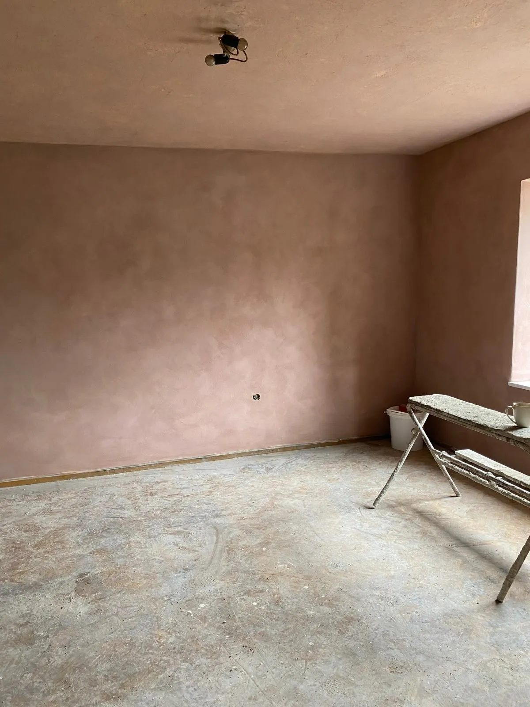
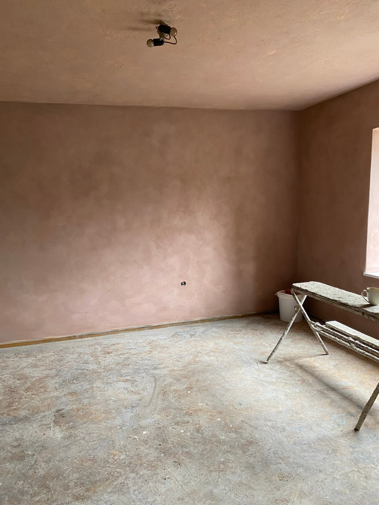
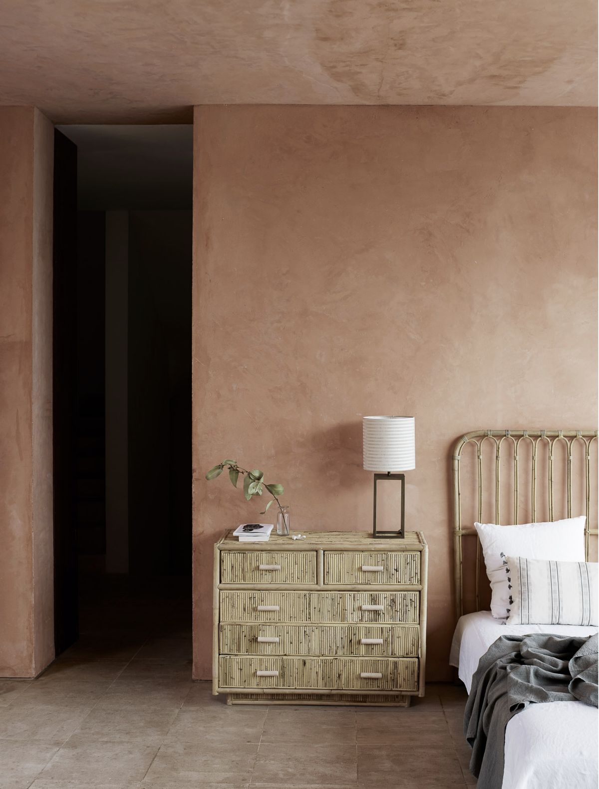
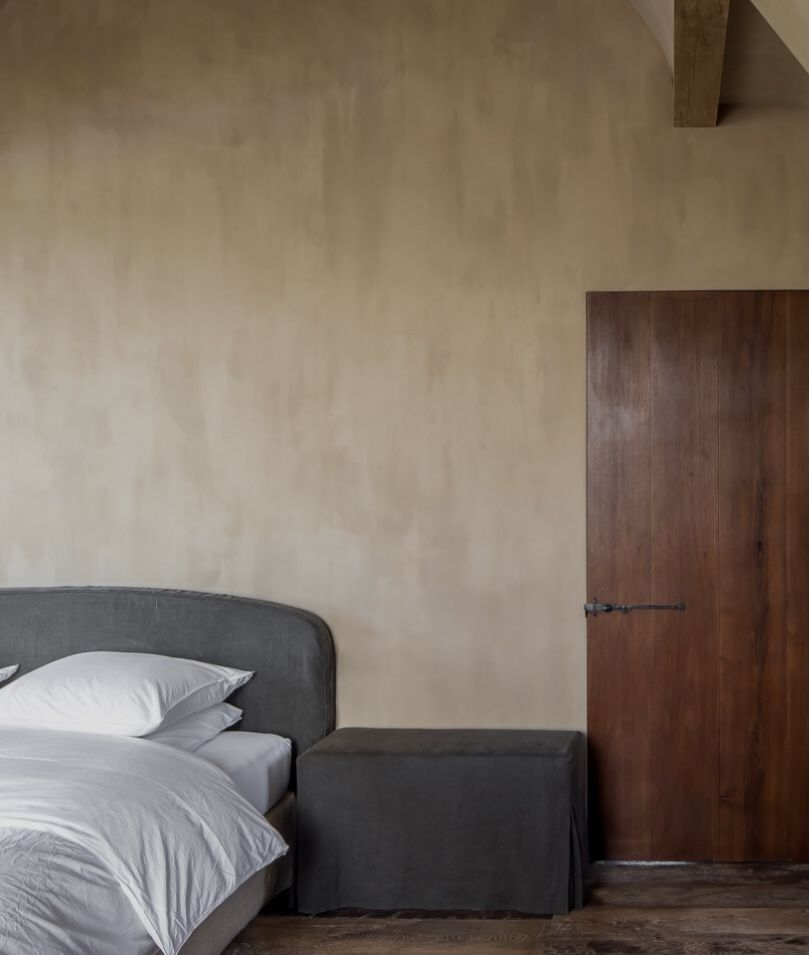
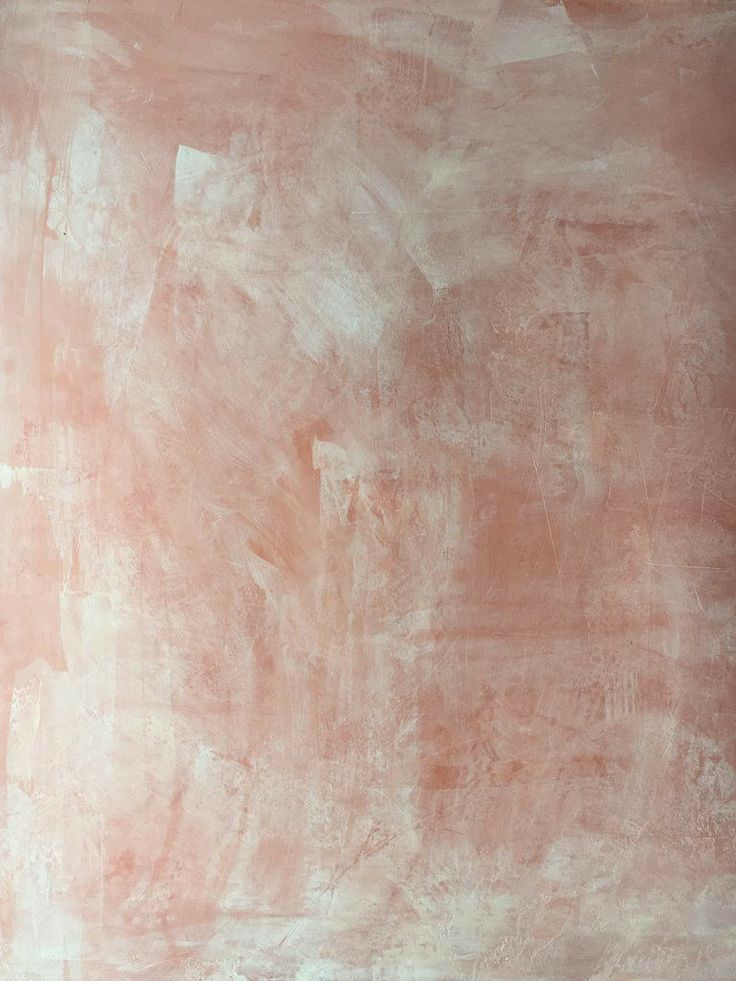

Limewash Painting in Byron Bay
Limewash painting for Byron Bay homes, minutes from the beach and Cape Byron Lighthouse. The breathable, textured mineral finish suits the coastal cottage look many homeowners here are after, without trapping moisture in brick or render.

 WHY PERMA PAINTING
WHY PERMA PAINTING
We take a long-term view of painting.
Materials, methods and timing matter.
So does their impact.
LONG-TERM THINKING
LOW-TOX MATERIALS
CAREFUL SURFACE
PREPARATION
REDUCED WASTE
RELIABLE TIMELINES
SUSTAINABLE
HEAT RESISTANCE




SERVICE AREA
Painting Byron Bay and the surrounding area
Based in Byron Bay, we cover Byron Bay and the nearby coastal and hinterland communities. If you're just outside Byron Bay, chances are we work in your area too — including:
- Suffolk Park
- Brunswick Heads
- Bangalow
- Lennox Head
Other services and areas
More services in Byron Bay
Limewash painting in other areas
WHAT OUR CLIENTS SAY
FAQ
Limewash painting in Byron Bay — common questions
What exactly is limewash, and how is it different to regular paint?
Limewash is a mineral-based finish that soaks into the surface rather than sitting on top, giving a soft, textured, matte look popular on Byron Bay's beach-style homes.
Does limewash need any special upkeep?
It weathers naturally over time, which is part of its appeal, but we can talk you through simple maintenance if you want it looking consistent.
What surfaces work best for limewash?
Render, brick, drywall and some masonry surfaces take limewash particularly well — we can assess your walls during the quote.
Get a free quote in Byron Bay
Tell us about your walls and we'll get back to you with a clear, no-obligation quote.
GET IN TOUCHGET IN TOUCH